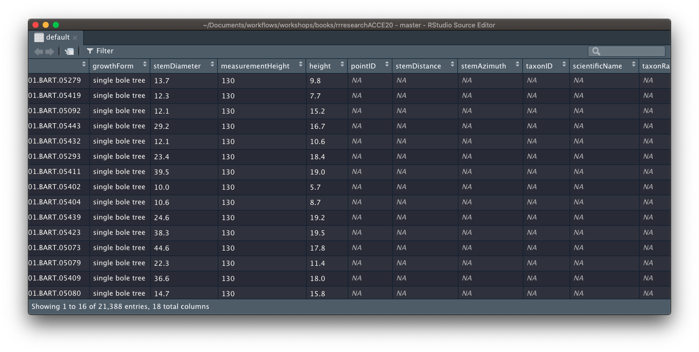

Merging data
Let’s say we want to geolocate every individual in our analytic data.
As we’ve discussed, the various tables we downloaded hold different information collected during the various survey events.
- plot level metadata
- individual level tagging metadata
- individual level repeated measurement data (although we only have a single measurement event per individual in our data set).
Currently, only the plot is geolocated, the data being contained in vst_perplotperyear.csv columns decimalLatitude and decimalLongitude.
The location of each individual stem is defined in vst_mappingandtagging.csv.
A number of variables are involved, including pointID which identifies a point on a 10m cell grid centred around decimalLatitude and decimalLongitude, and stemDistance and stemAzimuth which define the location of a stem, relative to the location of pointID. The full method used to locate individual stems is detailed in methods/NEON_vegStructure_userGuide_vA.pdf.

So to geolocate our individuals, we need to join information from vst_perplotperyear.csv and vst_mappingandtagging.csv into our individuals tibble.
We use the family of *_join function in dplyr to merge columns from different tibbles.
Join Basics
There are a number of joins we can perform with dplyr.
Let’s have a look at a few of them with a simple example using some dplyr in-built data:
## # A tibble: 3 x 2
## name band
## <chr> <chr>
## 1 Mick Stones
## 2 John Beatles
## 3 Paul Beatles## # A tibble: 3 x 2
## name plays
## <chr> <chr>
## 1 John guitar
## 2 Paul bass
## 3 Keith guitarThe only variable shared between the two tables is name so this is the only variable we can perform joins over. By default, any *_join function will try to merge on the values of any matched columns in the tables being merged.
## Joining, by = "name"## # A tibble: 2 x 3
## name band plays
## <chr> <chr> <chr>
## 1 John Beatles guitar
## 2 Paul Beatles bassinner_join has merged all three unique columns across the two tables into a single tibble.
It has only kept the rows in which name values had a match in both tables. In this case only data about John and Paul was contained in both tables.
## Joining, by = "name"## # A tibble: 3 x 3
## name band plays
## <chr> <chr> <chr>
## 1 Mick Stones <NA>
## 2 John Beatles guitar
## 3 Paul Beatles bassleft_join joins on the names in the left hand table and appends any rows from the right hand table in which name match. In this case, there is no data for Keith in band_members so he is ignored completely. There is also no match for Mick in band_instruments so NA is returned for plays instead.
## Joining, by = "name"## # A tibble: 3 x 3
## name band plays
## <chr> <chr> <chr>
## 1 John Beatles guitar
## 2 Paul Beatles bass
## 3 Keith <NA> guitarright_join on the other hand joins on the name in the right hand table. In this case, Mick is dropped completely Keith gets NA for band.
## Joining, by = "name"## # A tibble: 4 x 3
## name band plays
## <chr> <chr> <chr>
## 1 Mick Stones <NA>
## 2 John Beatles guitar
## 3 Paul Beatles bass
## 4 Keith <NA> guitarFinally, a full_join joins on all unique values of name found across the two tables, returning NA where there are no matches between the two tables.
Joining our tables with dplyr
Join vst_mappingandtagging.csv data
Let’s start by merging data from vst_mappingandtagging.csv. Let’s read the data in.
This data set contains taxonomic and within-plot location metadata on individuals collected during mapping and tagging. There is one row per individual in the data set.
## [1] "uid" "eventID" "pointID" "stemDistance"
## [5] "stemAzimuth" "individualID" "taxonID" "scientificName"
## [9] "taxonRank"Let’s see how many matches in column names we have between the two datasets
Challenge: Finding column name matches in two tables
Given the two tables we are trying to join, can you write some code that checks which column names in individual have matches in maptag column names?
Hint: This is the correct answer.
## [1] "uid" "eventID" "individualID"Default left_join
Because we want to match the rest of the tables to our individual data, we use left_join() and supply individual as the first argument and maptag as the second.
## Joining, by = c("uid", "eventID", "individualID")## # A tibble: 14,961 x 18
## uid namedLocation date eventID domainID siteID plotID individualID
## <chr> <chr> <date> <chr> <chr> <chr> <chr> <chr>
## 1 a36a… BART_037.bas… 2015-08-26 vst_BA… D01 BART BART_… NEON.PLA.D0…
## 2 68dc… BART_037.bas… 2015-08-26 vst_BA… D01 BART BART_… NEON.PLA.D0…
## 3 a895… BART_044.bas… 2015-08-26 vst_BA… D01 BART BART_… NEON.PLA.D0…
## 4 eb34… BART_044.bas… 2015-08-26 vst_BA… D01 BART BART_… NEON.PLA.D0…
## 5 2a44… BART_044.bas… 2015-08-26 vst_BA… D01 BART BART_… NEON.PLA.D0…
## 6 e485… BART_044.bas… 2015-08-26 vst_BA… D01 BART BART_… NEON.PLA.D0…
## 7 280c… BART_044.bas… 2015-08-26 vst_BA… D01 BART BART_… NEON.PLA.D0…
## 8 0e50… BART_044.bas… 2015-08-26 vst_BA… D01 BART BART_… NEON.PLA.D0…
## 9 4918… BART_044.bas… 2015-08-26 vst_BA… D01 BART BART_… NEON.PLA.D0…
## 10 ef16… BART_044.bas… 2015-08-26 vst_BA… D01 BART BART_… NEON.PLA.D0…
## # … with 14,951 more rows, and 10 more variables: growthForm <chr>,
## # stemDiameter <dbl>, measurementHeight <dbl>, height <dbl>, pointID <dbl>,
## # stemDistance <dbl>, stemAzimuth <dbl>, taxonID <chr>, scientificName <chr>,
## # taxonRank <chr>Great we have a merge!
Looks successful right? How do we really know nothing has gone wrong though? Remember, to successfully merge the tables, the data in the columns the tables are being joined on need to have corresponding values across all columns to be linked successfully, otherwise it will return NAs. So, although our code ran successfully, it may well not have found any matching rows in maptag to merge into individual.
To check whether things have worked, we can start with inspecting the output for the columns of interest, in this case the maptag columns we are trying to join into individual.
When working interactively and testing out pipes, you can pipe objects into View() for quick inspection. If you provide a character string as an argument, it is used as a name for the data view tab it launches

Clearly this has not worked! We need to start digging into why but we don’t want to have to keep manually checking whether it worked or not. Enter DEFENSIVE PROGRAMMING.
Defensive programming with data
As I mentioned in the Data Management Basics slides, assertr is a useful package for including validation checks in our data pipelines.
In our case, we can use assertr function assert to check that certain columns of interest (stemDistance, stemAzimuth, pointID) are joined successfully (i.e. there re no NA values). Note that this only works because I know for a fact that there is data avaliable for all individuals.
There may be situations in which NAs are valid missing data, in which case this would not be an appropriate test.
individual %>%
dplyr::left_join(maptag) %>%
assertr::assert(assertr::not_na, stemDistance, stemAzimuth, pointID)## Joining, by = c("uid", "eventID", "individualID")## Column 'stemDistance' violates assertion 'not_na' 14961 times
## verb redux_fn predicate column index value
## 1 assert NA not_na stemDistance 1 NA
## 2 assert NA not_na stemDistance 2 NA
## 3 assert NA not_na stemDistance 3 NA
## 4 assert NA not_na stemDistance 4 NA
## 5 assert NA not_na stemDistance 5 NA
## [omitted 14956 rows]
##
##
## Column 'stemAzimuth' violates assertion 'not_na' 14961 times
## verb redux_fn predicate column index value
## 1 assert NA not_na stemAzimuth 1 NA
## 2 assert NA not_na stemAzimuth 2 NA
## 3 assert NA not_na stemAzimuth 3 NA
## 4 assert NA not_na stemAzimuth 4 NA
## 5 assert NA not_na stemAzimuth 5 NA
## [omitted 14956 rows]
##
##
## Column 'pointID' violates assertion 'not_na' 14961 times
## verb redux_fn predicate column index value
## 1 assert NA not_na pointID 1 NA
## 2 assert NA not_na pointID 2 NA
## 3 assert NA not_na pointID 3 NA
## 4 assert NA not_na pointID 4 NA
## 5 assert NA not_na pointID 5 NA
## [omitted 14956 rows]## Error: assertr stopped executionBy including this check, I don’t have to guess or manually check whether the merge has been successful. The code will just error if it hasn’t 🙌.
Join vst_perplotperyear.csv
Now let’s carry on and join the perplot data. First let’s read it in.
## [1] "uid" "plotID" "plotType"
## [4] "nlcdClass" "decimalLatitude" "decimalLongitude"
## [7] "geodeticDatum" "easting" "northing"
## [10] "utmZone" "elevation" "elevationUncertainty"
## [13] "eventID"Similarly to maptag, we want to exclude eventID and suffix the uid column. This time, however, we will be joining by plotID
Let’s also move our validation test to the end and add the new columns we want to check to it, i.e. stemDistance, stemAzimuth, pointID.
perplot <- perplot %>% select(-eventID)
individual %>%
dplyr::left_join(maptag,
by = "individualID",
suffix = c("", "_map")) %>%
dplyr::left_join(perplot, by = c("plotID"),
suffix = c("", "_ppl")) %>%
assertr::assert(assertr::not_na, decimalLatitude,
decimalLongitude, plotID, stemDistance, stemAzimuth, pointID)## # A tibble: 14,961 x 30
## uid namedLocation date eventID domainID siteID plotID individualID
## <chr> <chr> <date> <chr> <chr> <chr> <chr> <chr>
## 1 a36a… BART_037.bas… 2015-08-26 vst_BA… D01 BART BART_… NEON.PLA.D0…
## 2 68dc… BART_037.bas… 2015-08-26 vst_BA… D01 BART BART_… NEON.PLA.D0…
## 3 a895… BART_044.bas… 2015-08-26 vst_BA… D01 BART BART_… NEON.PLA.D0…
## 4 eb34… BART_044.bas… 2015-08-26 vst_BA… D01 BART BART_… NEON.PLA.D0…
## 5 2a44… BART_044.bas… 2015-08-26 vst_BA… D01 BART BART_… NEON.PLA.D0…
## 6 e485… BART_044.bas… 2015-08-26 vst_BA… D01 BART BART_… NEON.PLA.D0…
## 7 280c… BART_044.bas… 2015-08-26 vst_BA… D01 BART BART_… NEON.PLA.D0…
## 8 0e50… BART_044.bas… 2015-08-26 vst_BA… D01 BART BART_… NEON.PLA.D0…
## 9 4918… BART_044.bas… 2015-08-26 vst_BA… D01 BART BART_… NEON.PLA.D0…
## 10 ef16… BART_044.bas… 2015-08-26 vst_BA… D01 BART BART_… NEON.PLA.D0…
## # … with 14,951 more rows, and 22 more variables: growthForm <chr>,
## # stemDiameter <dbl>, measurementHeight <dbl>, height <dbl>, uid_map <chr>,
## # pointID <dbl>, stemDistance <dbl>, stemAzimuth <dbl>, taxonID <chr>,
## # scientificName <chr>, taxonRank <chr>, uid_ppl <chr>, plotType <chr>,
## # nlcdClass <chr>, decimalLatitude <dbl>, decimalLongitude <dbl>,
## # geodeticDatum <chr>, easting <dbl>, northing <dbl>, utmZone <chr>,
## # elevation <dbl>, elevationUncertainty <dbl>Awesome!! It’s worked!
Now that we are happy with our data we can use a new operator, the assignment pipe (%<>%).
This allows us to both pipe an object forward into an expression and also update it with the resulting value.
individual %<>%
dplyr::left_join(maptag,
by = "individualID",
suffix = c("", "_map")) %>%
dplyr::left_join(perplot, by = c("plotID"),
suffix = c("", "_ppl")) %>%
assertr::assert(assertr::not_na, decimalLatitude,
decimalLongitude, plotID, stemDistance, stemAzimuth, pointID)We can now move on to geolocate our individuals!